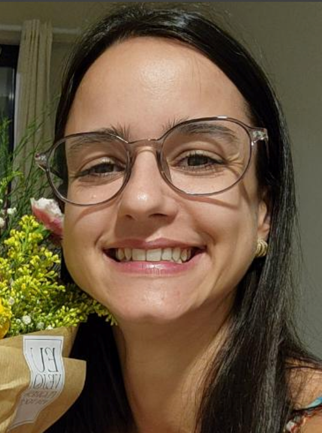

Dra. Ornella di Leone
Sua Parceira em Cuidados Pediátricos
Sua Parceira em Cuidados Pediátricos
Olá! Eu sou a Dra. Ornella di Leone, pediatra com mais de 10 anos de experiência cuidando de crianças. Meu objetivo é garantir que cada criança tenha um começo de vida saudável e feliz, com muita compaixão e cuidado.
Email: draornella@example.com
Telefone: (123) 456-7890
Endereço: Rua Saúde, 123, Cidade Médica